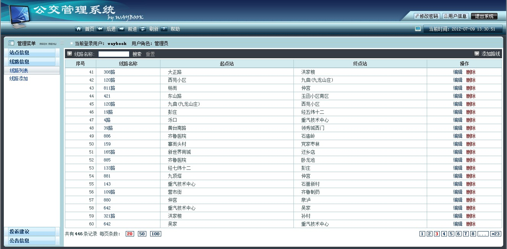

使用指南
登录
打开登录界面
使用支持HTML5的浏览器打开网址：http://域名/waybook/admin/login.html，即可进入到登录页面。
账号登录
在用户名和密码处分别填入相应的管理员账号和密码，敲击回车或者点击登录按钮。
点击重置将会清楚用户名和密码输入框中的内容。
用户名或者密码错误会有相应的提示。
管理后台首页
系统当前信息概览
系统登录后，右边的窗口会显示当前管理后台所对应的城市，该管理后台库中已有的公交线路条数和站点个数。
系统管理菜单
系统登录后，左边的窗口会显示当前管理后台的管理菜单，点击菜单中的栏目，将会在右边窗口显示相应的管理界面。
站点信息
查看站点列表
点击左菜单“站点信息”栏目下的“站点列表”，将在右窗口展示管理库中的站点列表。

站点搜索功能
在左上角输入框中输入搜索关键字，点击搜索，系统将根据搜索关键字给出匹配的站点列表。
点击重置按钮将清空搜索框中的内容。
左下方显示有管理库中的总站点记录数，右边的“20”，“50”，“100”按钮可设置每页显示的条数。
右下方为列表的页码选择区，从而对列表进行翻页显示。
在地图上查看站点
在列表中点击站点名称即可在地图上查看该站点。
地图左上角的功能按键如下：
缩小：缩小当前地图1个级别。
放大：放大当前地图1个级别。
概览：将当前的站点位置居中显示，并将地图调整到一个合适的缩放级别。
详情：显示当前站点的详细信息。
编辑：编辑当前站点的站点名和位置。
删除：删除当前站点。
编辑当前站点
编辑站点可从站点列表的操作栏中直接进入，也可在地图上查看站点时选择左上角的编辑按钮。
编辑状态下，编辑按钮为红底白字。
若修改站点名称，则点击编辑下的站名按钮，在右边展开的输入框中输入新的站名，然后点击确定，或者敲击回车键；取消则点击取消按钮。
若修改站点位置，则点击编辑下的位置按钮，然后在地图上找到新的站点位置单击，然后点击确定；取消则点击取消按钮。
再次点击编辑按钮，将退出编辑状态，编辑按钮恢复成白底蓝字。
添加新的站点
添加新的站点可点击左菜单“站点信息”下的“站点添加”直接进入，也可在“站点列表”右上角的“添加站点”进入。
添加站点为批量添加模式。
地图下的站点列表鼠标移上去会显示“编辑”和“删除”按钮，并在地图上也会在相应的站点标签上显示该站点名称。点击则会在地图上将相应的站点移至地图的中央。
当站点列表中的所有站点编辑完毕后，可点击“保存”按钮进行批量添加，如果其中有某几个站点添加失败，则系统会进行相应的提示。
地图左上角的功能按键如下：
缩小：缩小当前地图1个级别。
放大：放大当前地图1个级别。
概览：将当前地图上调整到一个可以全局查看所有已添加站点的合适的缩放级别。
创建站点：该按钮为一个状态切换按钮，当按钮变成红底白字时，每在地图上单击一次，则预添加一个站点；当按钮恢复成白底蓝字时，则关闭地图点击添加功能。
重置地图：清除所有预添加的站点。
删除站点
删除站点可以在站点列表的操作栏中直接点击“删除”按钮，也可以在地图上查看时选择地图左上角的“删除”按钮。
点击“删除”按钮后会弹出确认框进行确认是否删除。
如果该站点还有被一条或多条公交线路使用，则删除失败，只有在该站点没有被任何一条公交线路使用的情况下才可被删除。
线路信息
查看线路列表
点击左菜单“线路信息”栏目下的“线路列表”，将在右窗口展示管理库中的公交线路列表。
线路搜索功能
在左上角输入框中输入搜索关键字，点击搜索，系统将根据搜索关键字给出匹配的线路列表。
点击重置按钮将清空搜索框中的内容。
左下方显示有管理库中的总线路记录数，右边的“20”，“50”，“100”按钮可设置每页显示的条数。
右下方为列表的页码选择区，从而对列表进行翻页显示。
在地图上查看线路
在列表中点击线路名称即可在地图上查看该线路。
地图左上角的功能按键如下：
缩小：缩小当前地图1个级别。
放大：放大当前地图1个级别。
概览：将当前的线路信息居中显示，并将地图调整到一个合适的缩放级别。
详情：显示当前线路的详细信息。
编辑：切换到此线路的编辑状态。
删除：删除当前线路。
地图的右上角有“关闭”按钮，点击后回到列表页面。
编辑当前线路
编辑线路页面可从线路列表的操作栏中直接进入，也可在地图上查看线路信息时选择左上角的编辑按钮进入。
编辑状态下，页面右上角有“返回”按钮，回到线路的列表页面。
地图左上角的的功能按钮如下：
缩小：缩小当前地图1个级别。
放大：放大当前地图1个级别。
概览：将当前的线路信息居中显示，并将地图调整到一个合适的缩放级别。
生成线路：根据已有的站点信息，生成原始线路，即由直线按顺序连接每两个站点。
编辑路线：该按钮为一个状态切换按钮，当按钮变成红底白字时，即可用鼠标在地图上拖动线路进行线路的编辑，再次点击则恢复成白底蓝字，同时关闭线路的编辑功能。
删除线路：删除当前生成的线路，但保留站点信息。
地图下方的输入框功能如下：
“线路名称”，“票价描述”，“班车时间”，“公交公司”，“线路描述”后面的输入框分别修改相应的线路属性内容。
“站点检索”后面的输入框根据输入内容实时显示匹配的站点信息，通过键盘方向键和或者或者鼠标点击即可选择相应的站点，选择后会在站点检索下方列出库中站点名字相同的站点，鼠标移到站点列表上会在站点名边上显示“添加”按钮，同时在地图上显示相应的站点和此站点的一条参考路线，鼠标单击则会将此站点自动居中。
添加检索出的站点后，该站点名会出现在下面的站点列表的最后面，同时地图上会去除其它检索出的候选站点。
站点列表中的站点，鼠标移上去会在站点名后面显示“删除”按钮，并同时在地图上的相应站点做出标识，鼠标单击站点会在地图上自动将相应站点移至地图中央，鼠标按住站点可拖动该站点到列表的任意位置进行排序。
站点列表的站点成员进行变动后，需点击生成路线根据新的站点列表信息生成新的线路信息，然后进入编辑路线状态进行相应的编辑。
所有操作结束后可点击“保存”按钮进行保存。
添加新的线路
添加新的线路可点击左菜单“线路信息”下的“线路添加”直接进入，也可在“线路列表”右上角的“添加线路”进入。
添加线路的操作同线路编辑一样，唯一的区别是添加线路页面所有的信息都需要手动添加。
删除线路
删除线路可以在线路列表的操作栏中直接点击“删除”按钮，也可以在地图上查看时选择地图左上角的“删除”按钮进行操作。
点击“删除”按钮后会弹出确认框进行确认是否删除。
投诉信息管理
查看投诉列表
点击左菜单“投诉建议”栏目下的“投诉管理”，将在右窗口展示管理库中的投诉列表。
当鼠标移至内容后面的“详细”按钮上，会自动显示完整的内容卡片，该内容卡片的隐藏机制为鼠标从卡片上移出。
当内容在宽度上超过卡片宽度时，卡片的下端会自动出现横向滚动条。
投诉搜索功能
在左上角输入框中输入搜索关键字，点击搜索，系统将根据搜索关键字给出标题匹配的投诉列表。
点击重置按钮将清空搜索框中的内容。
左下方显示有管理库中的总投诉记录数，右边的“20”，“50”，“100”按钮可设置每页显示的条数。
右下方为列表的页码选择区，从而对列表进行翻页显示。
在地图上查看投诉线路和投诉人位置
在列表中点击线路名称边上的“查看”按钮即可在地图上查看投诉相关信息。
地图左上角的功能按键如下：
缩小：缩小当前地图1个级别。
放大：放大当前地图1个级别。
线路概览：将当前的线路信息居中显示，并将地图调整到一个合适的缩放级别。
位置概览：将当前投诉人的位置信息居中显示，并将地图调整到一个合适的缩放级别。
地图的右上角有“关闭”按钮，点击后回到列表页面。
查看投诉回复
在列表的操作栏中如果该投诉已经有回复信息，则可点击“查看回复”查看回复内容，如果该投诉暂时还没有给与回复，则操作栏中显示灰色的“暂无回复”字样。
回复列表中将根据时间顺序依次显示回复的内容。
添加投诉回复
在列表的操作栏中点击“回复”按钮可直接对该条投诉进行回复。
回复面板中，回复人内容为可选。
待内容填写完毕后点击“提交”按钮进行提交。
建议信息信息
查看建议列表
点击左菜单“投诉建议”栏目下的“建议管理”，将在右窗口展示管理库中的建议列表。
当鼠标移至内容后面的“详细”按钮上，会自动显示完整的内容卡片，该内容卡片的隐藏机制为鼠标从卡片上移出。
当内容在宽度上超过卡片宽度时，卡片的下端会自动出现横向滚动条。
建议搜索功能
在左上角输入框中输入搜索关键字，点击搜索，系统将根据搜索关键字给出标题匹配的建议列表。
点击重置按钮将清空搜索框中的内容。
左下方显示有管理库中的总建议记录数，右边的“20”，“50”，“100”按钮可设置每页显示的条数。
右下方为列表的页码选择区，从而对列表进行翻页显示。
查看建议回复
在列表的操作栏中如果该建议已经有回复信息，则可点击“查看回复”查看回复内容，如果该投诉暂时还没有给与回复，则操作栏中显示灰色的“暂无回复”字样。
回复列表中将根据时间顺序依次显示回复的内容。
添加建议回复
在列表的操作栏中点击“回复”按钮可直接对该条建议进行回复。
回复面板中，回复人内容为可选。
待内容填写完毕后点击“提交”按钮进行提交。
公告信息管理
查看公告列表
点击左菜单“公告信息”栏目下的“公告列表”，将在右窗口展示管理库中的公告列表。
当鼠标移至内容后面的“详细”按钮上，会自动显示完整的内容卡片，该内容卡片的隐藏机制为鼠标从卡片上移出。
当内容在宽度上超过卡片宽度时，卡片的下端会自动出现横向滚动条。
公告搜索功能
在左上角输入框中输入搜索关键字，点击搜索，系统将根据搜索关键字给出标题匹配的建议列表。
点击重置按钮将清空搜索框中的内容。
左下方显示有管理库中的总建议记录数，右边的“20”，“50”，“100”按钮可设置每页显示的条数。
右下方为列表的页码选择区，从而对列表进行翻页显示。
删除公告
删除公告可以在列表的操作栏中直接点击“删除”按钮。
点击“删除”按钮后会弹出确认框进行确认是否删除。
发布新的公告
发布新的公告可点击左菜单“公告信息”下的“公告添加”直接进入，也可在“公告列表”右上角的“添加公告”进入。
添加页面中，所有的输入框都为必填。
待内容填写完毕后点击“发布”按钮进行发布。